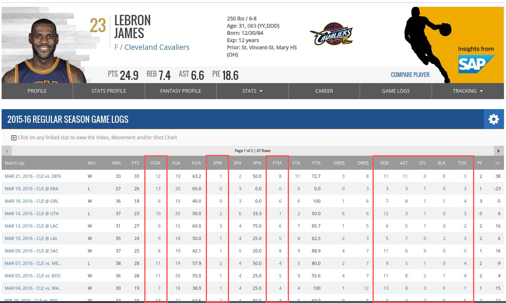
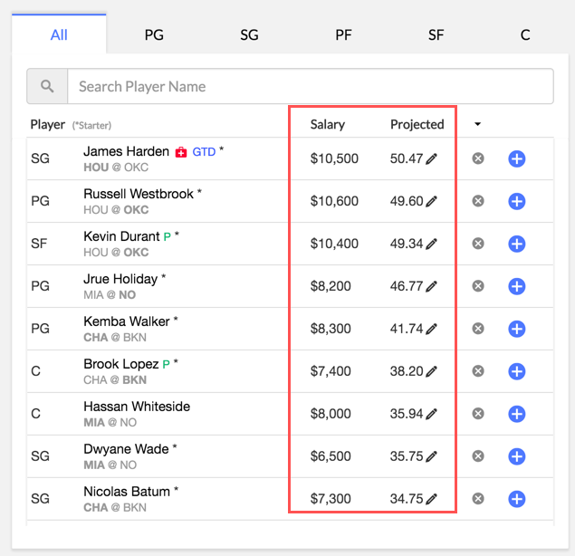

For our project, we decided to analyze NBA player scores by game in order to find optimal fantasy basketball lineups for website like FanDuel and DraftKings. We want to look at a player's historical game performance and then predict that player's performance in a future game. We can then take these projected scores to recommend the optimal lineup of players for users of the websites mentioned above. Below are some specific questions we're hoping to tackle in the process.
The NBA player data (shown below) is obtained from stats.nba.com. It contains the player scores, with each entry representing a particular player's score for a particular game. Each player's score is broken down into their 3-point and 2-point field goals made, freethrows, steals, blocks, rebounds, assists, and turnovers.
We also obtain projections and salary data from Swish Analytics (shown below). We currently used this data to calculate the optimal lineup which is what we use in the Visualization section below. We are also using this data as an example to compare with the projections we make in the ML section below.
This visualization shows a basketball chart, where each circle represents a player on their strong positions. It gives recommendation on which player to choose for a specific position. When hovering over each circle, i.e. each player, there's a tooltip that tells information about the player, such as their salary, position, projected points, and team name. The color scale also gives information as to which player is projected to earn the most points - darkest representing most points.
First, data about players and games are scraped from NBA. Data about daily projected points for players are taken from Swish Analytics. These two pieces of data are combined together and stored in Redis.
First, the players are sorted by their projected points from highest to lowest. With the sorted list, the players are filtered by their salary and injury status. In order for them to be in the lineup, they have to have salary less than or equal to 60,000/9 and have no injury. We want to recommend players whose salary is affordable and performs well.
There are 9 players in a lineup - one in the Center position, and 2 players in other positions each.
Then, for this visualization, we pick the player with the highest point from each position. Thus, the visualization recommends 5 players for 5 positions.
Once we have our NBA player data, we can apply machine learning to predict projected player scores. We decided to use logistic regression to make the projections.
We transform our player data from their goals, freethrows, assists, etc. into a single FanDuel score. Then, we associate each player's FanDuel score for a game with the average FanDuel score of their prior games.
For fantasy scoring, it is not possible to rely on just one source of data to get all information because NBA does not provide fantasy salaries and the fantasy websites do not provide historical data. So, we had to combine data from two sources - NBA and Swish Analytics. We need this data to be updated every day, so we needed to build a module that can just be run each day to update the data. But, the module has to take into account the possibilities of data changing and inconsistent data. Building this module was definitely the hardest part of the project so far.
We're able to come up with reasonable projections that are quite comparable to those of Swish Analytics. We haven't been able to evaluate how good our results were against real data yet but we'll be doing that as the next step.
We've been able to get the optimal lineup given projection data and we've been able to project fantasy scores based on historical data.
One problem we're facing is trying to figure out which ML algorithms or what kind of pure stats could help us improve our predictions. Other than that, we're not facing any specific problems.
We think we're on track especially considering the fact that we'll be able to dedicate a lot more time to the project after Spring Break because the workload from the class reduces.
Definitely! The initial exploration has proven to be very exciting. Especially the insight that last 7 games is a good indicator of performance. We're excited to see where else we can go with this project.